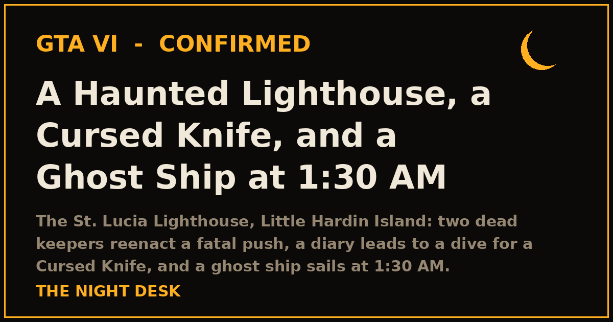

November 21, 2026
GTA VI Has a Haunted Lighthouse, a Cursed Knife, and a Ghost Ship That Sails at 1:30 AM
The St. Lucia Lighthouse on Little Hardin Island keeps a schedule: after midnight, two dead keepers reenact a fatal push off the tower, a diary in the ruins sends you on a night dive for a unique Cursed Knife, and at 1:30 AM a translucent green ghost ship materializes offshore. Confirmed by a Sportskeeda guide, SpectreX Gaming's full capture, and a dedicated solve video.
READ THE STORY →
November 21, 2026
GTA VI Is Hiding an Entire Second Game on Jason's Console
Boot up the JoySystem in Jason's home and there is a complete black-and-white puzzle game waiting on it — Tenebrae Lux, credited entirely to one fictional auteur, Johannes Zuch. Grid puzzles, a looping room with a code that's different for every player, a bridge crossed by solving a poem, and a two-to-three-hour runtime. Confirmed by Kotaku, a GameSpot puzzle guide, and full streamer playthroughs.
READ THE STORY →
November 21, 2026
GTA VI Has a Silent Hill Level, and It's Hiding in an Abandoned Hotel in Crosstown
The Marbelle Hotel in Crosstown is boarded up and for sale — but inside, a door opens by itself, the lights die, red symbols crawl across the walls, and the roof opens onto a city drowned in fog. A rooftop note and a downstairs safe make it pay. Confirmed by multiple guides and full-sequence gameplay video.
READ THE STORY →
November 21, 2026
A Caged Parrot in GTA VI Knows Where $2,000 Is Hidden — It Just Won't Say Much Else
Behind Three Sheets Liquor in Key Lento sits a fenced pet yard, a gang crew, and a red-and-blue parrot whose one useful word — "Generator" — points to a vent stuffed with cash. A back-office safe takes the whole site past $2,000. Confirmed by two full guides.
READ THE STORY →
November 21, 2026
GTA VI Hides a Serial-Killer Quest in Port Gellhorn — and It Never Gives You a Map Marker
Three missing-tourist posters at the Starlet Motel, three photographs in a Port Gellhorn warehouse, three bodies to find and report to a tipline — and the helpful voice on the phone is the killer. The full route, confirmed across multiple guide outlets.
READ THE STORY →
November 21, 2026
Freddie Gibbs Is a Doomsday Prepper in GTA VI — and His Bunker Pays $5,000
Western North Leonard County hides a fortified compound behind an electric fence: rapper Freddie Gibbs playing a prepper named Freddie, a two-visit infiltration, a hurricane — and $5,000 plus his Dubster for players who stay. Confirmed by a firsthand walkthrough and multiple guides.
READ THE STORY →
November 21, 2026
DEVELOPING: FBI investigating apparent breach of its own crime database
The FBI is investigating an apparent breach of the National Crime Information Center (NCIC), the database that links federal, state and local law enforcement nationwide, NBC News reported Friday night. The FBI has not commented, and the key facts — who got in, how, and what was taken — are not yet known.
READ THE STORY →
November 20, 2026
Guilty: Jury convicts Rinderknecht in Palisades Fire case
A federal jury in Los Angeles on Friday convicted Jonathan Rinderknecht, 30, of starting the January 2025 fire that became the Palisades Fire — the most destructive wildfire in the city's history, killing 12 people and destroying nearly 6,800 structures. He faces 5 to 40 years in prison at sentencing on March 17, 2027.
READ THE STORY →
November 20, 2026
GTA VI Players Are Reporting Five Hidden Cash Spots Worth Roughly $25,000 — Here's the Map Going Around
A community map circulating on Threads pins five early money spots across Leonida — a warehouse, a motel with a tiger, a parrot that pays, and a tribute car. None of it is confirmed yet. All of it is checkable.
READ THE STORY →
November 19, 2026
Guilty on all 7 counts in Milwaukee triple homicide — Zollicoffer verdict
A Milwaukee County jury convicted Thomas Zollicoffer, 37, on Thursday of three counts of first-degree intentional homicide and four counts of possession of a firearm by a felon in the Aug. 8 killings of three people in two shootings. Sentencing is set for Nov. 20.
READ THE STORY →November 19, 2026
PS5 Storage, Round Two: Making Room for the Holiday Game Wave
Round two on PS5 storage: the holiday game wave is bigger than launch day — the three storage tiers, the library triage, and the two install details that decide whether the gift games fit on Christmas night.
READ THE STORY →November 19, 2026
Water Softener Salt: The Upkeep Schedule Nobody Tells You
Choosing salt was the easy part. The upkeep rhythm — the two-minute monthly check, bridging, stocking for guest season, and the once-a-year clean-out — is what keeps a softener working in year three.
READ THE STORY →November 19, 2026
Night-Shift Commute, Holiday Edition: Equipping the Driver, Not Just the Car
The winter car kit equips the car; this one equips the driver — alertness that actually works, the in-cab kit, and surviving the Christmas schedule flip on night shift.
READ THE STORY →November 19, 2026
The Two-Week Runway: Christmas Household Prep Without the December Meltdown
Christmas household prep sequenced over fourteen days: guest capacity, kitchen capacity, power capacity, and the small stuff — batteries, tape, defrost math — that ambushes people.
READ THE STORY →
November 17, 2026
In custody — suspect surrenders in fatal Mundy Township McDonald's shooting
Willie James Kennebrew Jr., 18, surrendered to Genesee County Sheriff's deputies on Tuesday, Nov. 17, five days after the fatal shooting inside the McDonald's at 6015 Hill 23 Dr. in Mundy Township. He is charged with first-degree premeditated murder in the death of Jalen Sims Daniels, 18, a McDonald's employee.
READ THE STORY →
November 17, 2026
Manhunt in Genesee County — suspect sought in fatal Mundy Township McDonald's shooting
Metro Police Authority investigators are searching for Willie James Kennebrew Jr., 18, identified as a suspect in the Nov. 12 fatal shooting inside the McDonald's at 6015 Hill 23 Dr. in Mundy Township. Police say he is armed and dangerous and may have left Mid-Michigan.
READ THE STORY →November 16, 2026
The Night-Shift Drive Home: A Commute Kit for the Hardest Miles of the Day
The drive home is the most dangerous part of a night shift. The alertness layer, the trunk breakdown kit, and rule zero: a nap beats every gadget on the list.
READ THE STORY →November 16, 2026
Toddler Waterpark Days: The Swim Gear That Actually Earns Its Bag Space
An approved, weight-matched vest, swim diapers times three, and sun gear that stays on: the short list of toddler swim gear that earns its space in the bag.
READ THE STORY →November 16, 2026
Water Softener Salt, Explained: Types, How Much Your Tank Takes, and Storing It
Pellets, solar, rock, or potassium chloride — what the bags actually are, how much a typical brine tank takes, and the two-minute monthly check that keeps a softener working.
READ THE STORY →November 16, 2026
A First 3D Printer, Without the Buyer's Remorse: What the Specs Actually Mean
Auto leveling, a PEI flex plate, direct drive: how to read a first-printer listing, what the filament choices mean, and the small kit that prevents big headaches.
READ THE STORY →November 16, 2026
PS5 Headsets for Late-Night Sessions: Hear Everything, Wake Nobody
Game sound in, house sound out: the four specs that matter for a PS5 headset when kids are asleep in the next room, and the settings that matter as much as the hardware.
READ THE STORY →November 15, 2026
Back to PlayStation After Years Away: The PS5 Accessories Worth Buying First
Coming back to PlayStation after years away? The honest accessory order — a second controller, a charging dock, and a headset first — and what to skip for now.
READ THE STORY →November 15, 2026
A Play Space That Survives a Toddler: The Short, Honest Setup List
The short, honest setup list for a toddler play space: furniture anchors and outlet covers first, then a thick foam mat and storage a small person can actually use.
READ THE STORY →November 15, 2026
Night-Shift Sleep: Small Gear That Makes Daytime Sleep Actually Work
Daytime sleep is an environment problem, and environment problems have gear answers: blackout curtains, a sleep mask, white noise, and earplugs — in the order to buy them.
READ THE STORY →November 15, 2026
The Household Emergency Binder: What Actually Belongs in One (and What Doesn't)
What actually belongs in a household emergency binder, what doesn't, and how to keep it safe — plus the ready-made version from our own storefront.
READ THE STORY →Showing the latest 25 — browse the full archive →